1. Your first 2 minutes
There's no account and no sign-up. Open the app and you're in.
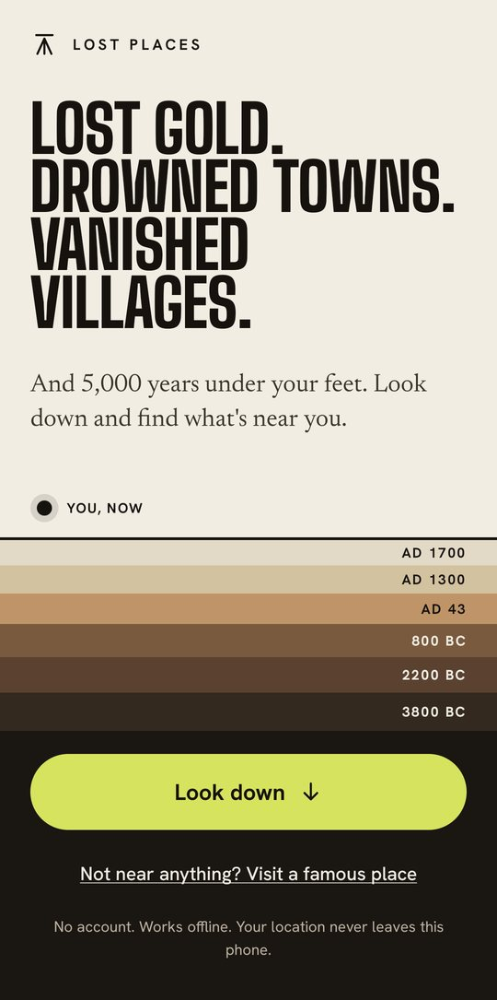
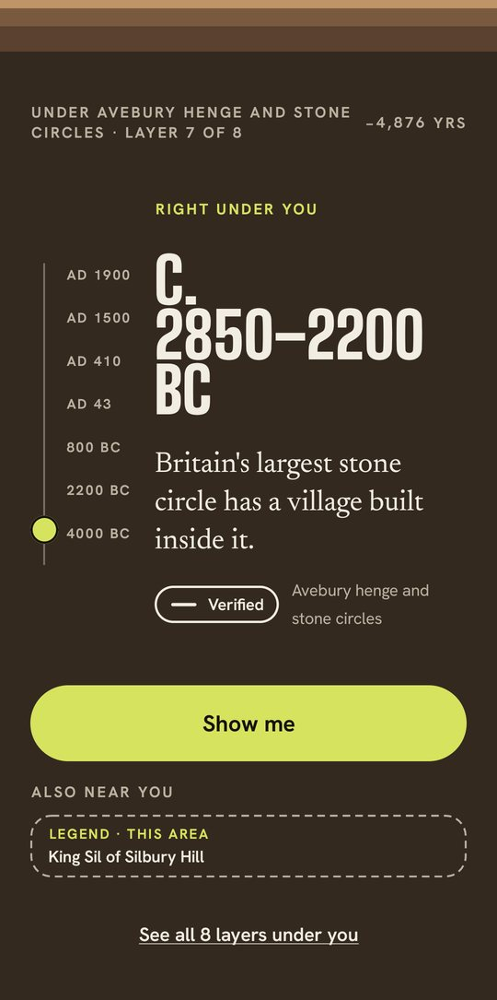
- Tap Look down. The app asks to use your location. Say yes, and choose Precise if your phone asks.
- Watch the sink. The screen sinks down through the centuries. The years count back and your phone gives a little tick for each century. It lands on something real near you, such as the stone circle you're standing in.
- Tap Show me to open that place, or tap See all layers under you to see your Column.
Outdoors, GPS finds you in a few seconds. It works with no phone signal.
Reading your Column
Your Column is the ground under you, drawn as layers of time. Today is at the top. The oldest things are at the bottom.
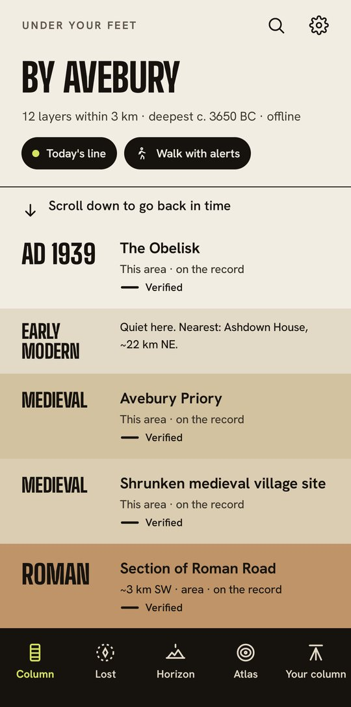
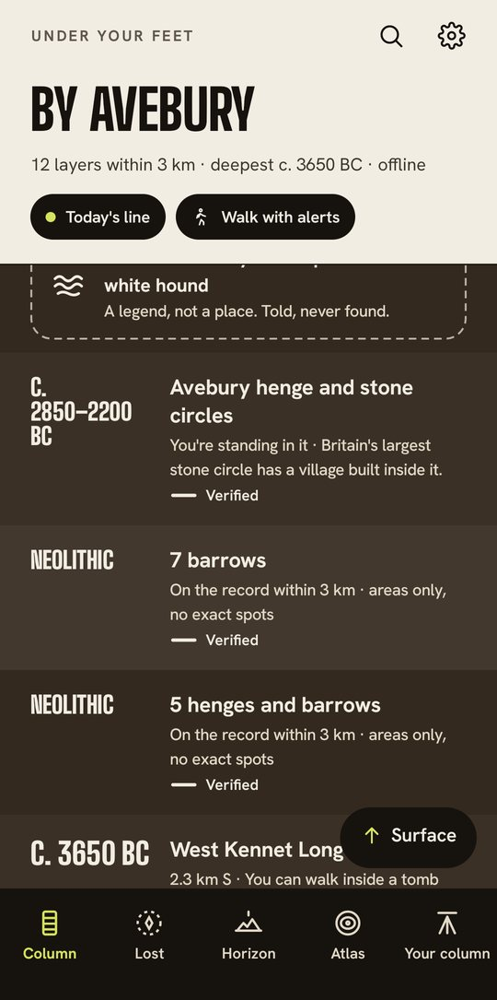
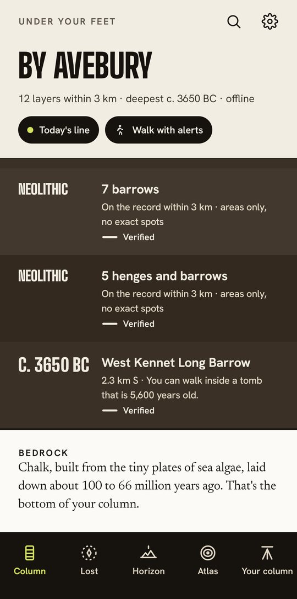
- Scroll down to go back in time. Each band is an era: early modern, medieval, Roman, Iron Age, Bronze Age, Neolithic.
- Every place within 3 km of you is a layer. Each one shows its date, its name, how far away it is, and how sure we are about it.
- "Area only, no exact spots" means a group of records that we never pin to one spot (see Respect the past).
- "Quiet here" means nothing from that era is on record nearby. The app tells you the nearest one instead.
- A dashed box with mist is a legend told about this ground. It's a story, not a place.
- Bedrock is the very bottom: the rock your whole column sits on.
- Tap a layer to open it. Tap Surface to come back up to today.
2. The five tabs
The bar at the bottom of the screen has five tabs.
| Tab | What it's for |
|---|---|
| Column | The layers of time under where you stand. Your home screen. Search, settings, Today's line and Walk with alerts are at the top. |
| Lost | Things that vanished: lost villages, drowned towns, lost treasure and legends, nearest first. |
| Horizon | Turn on the spot and see which old places lie on your skyline. Uses the compass, not the camera. |
| Atlas | The Time Atlas: a map of the land around you, era by era. |
| Your column | Your own collection. It only grows when you stand at a real place. |
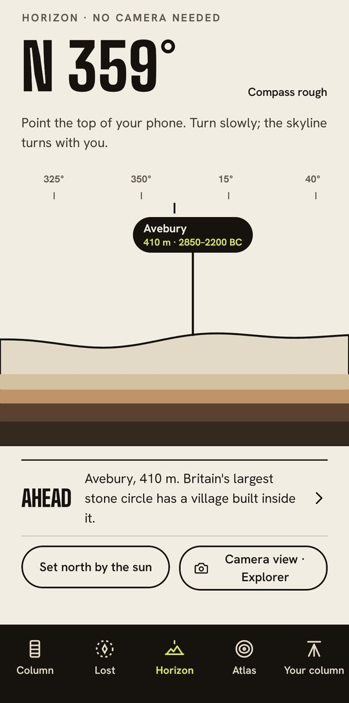
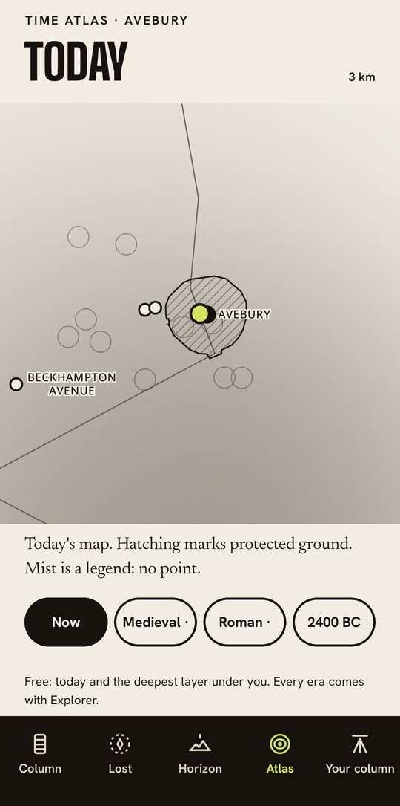
Horizon. Point the top of your phone ahead of you and turn slowly. The skyline turns with you. Ahead names the place you're facing, with how far away it is, and Horizon shows today's sunset time. If the app says Compass rough, tap Set north by the sun. Face the sun with the top of your phone and tap Done. Don't look straight at the sun. Camera view shows the labels over your camera picture. It's an Explorer extra, but you get 3 free tries.
Atlas. Tap an era button, such as Medieval or 2400 BC, to see only the places that already stood by then. Hatching marks protected ground. Mist marks a legend, which is never a point. Free shows today's map plus the deepest era under you. Every era comes with Explorer.
Settings is the gear icon at the top of the Column and of Your column. It has offline packs, alerts and walking, quiet hours, Explorer, privacy and sources.
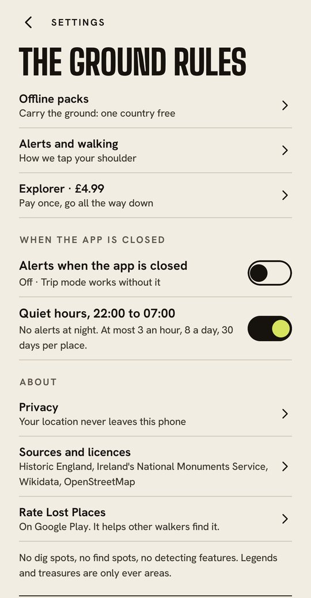
3. At home? Visit a column, or search
You don't have to be outdoors to explore.
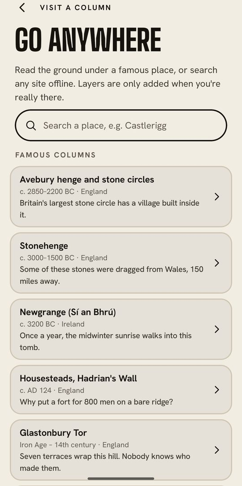
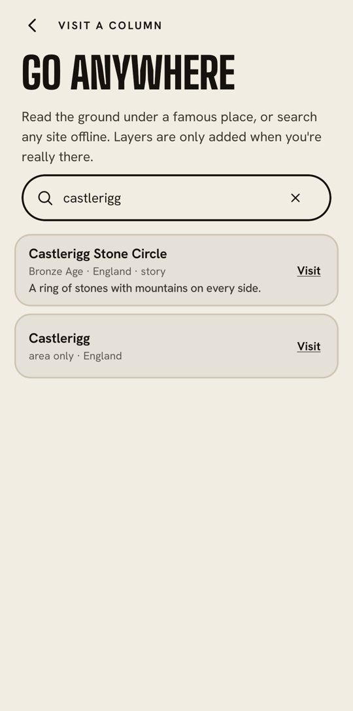
- On the Column, tap the magnifying glass. (With no location, tap Or visit a famous place.)
- Famous columns: 12 places in England and Ireland, including Avebury, Stonehenge, Newgrange, Housesteads on Hadrian's Wall, Glastonbury Tor, Castlerigg, Poulnabrone, Wharram Percy, Tintagel, Lindisfarne, Skellig Michael and the Roman Baths.
- Search any site by name, for example "Castlerigg". Search works offline. With your country downloaded, it finds every site on record, not just the famous ones.
- Tap Visit to read the ground under that place. Visit is offered for places you can stand at.
- Legends, treasure, lost towns and mysteries come up under Lost, legend and mystery. They open their own page, which shows them only as soft areas, never as a point or a precise distance.
While you're visiting, the Column says Browsing a column. Tap Use my location to come back to where you really are.
4. Places and stories
Tap any layer to open its place page.
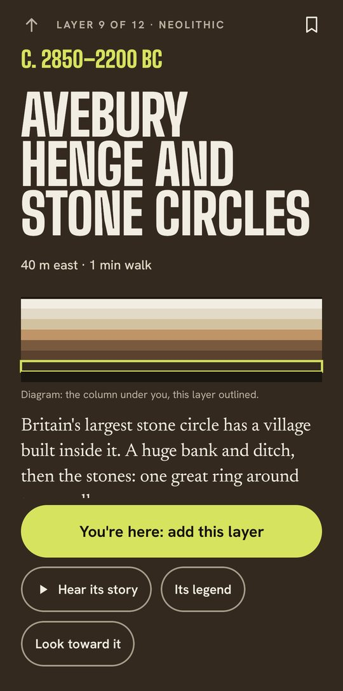
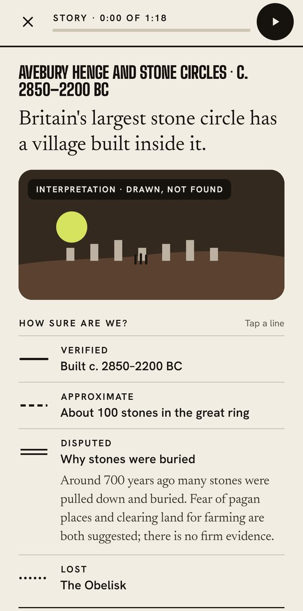
A place page shows:
- How far away it is and which way, plus the walking time.
- Where it sits in your column, as a small diagram.
- A short description, and whether it's a protected monument.
- Access, for example "No public access recorded. Look from public paths."
The buttons you might see:
| Button | What it does |
|---|---|
| You're here: add this layer | Only shows when you're standing there. See section 7. |
| Walk there with alerts | For places up to 5 km away. Starts a walk that taps you on the shoulder when you arrive. |
| Directions | For places further away. Opens your own maps app. |
| Hear its story | The real history of the place. The button shows how long it runs, usually about a minute and a half. |
| Its legend | The folk tale told about it. |
| Look toward it | Opens Horizon pointing you at it. |
| Bookmark (top right) | Saves the place for later. |
Hear its story, or Its legend?
- Hear its story is what we know: what was built, when and by whom. It starts with a hook, has a drawing marked "Interpretation · drawn, not found", then How sure are we?, The longer version and Sources. Every source is listed.
- Its legend is what people tell. Legends are shown in mist, with no point and no distance. They are clearly marked as legends.
- Legends and lost treasure come as five short slides, then the evidence, then a link to the area.
- At the end of a story, Up next suggests another one nearby.
Narration and words
The words are always on screen, so you can read without sound. Tap the play button to hear the story read aloud, sentence by sentence. Tap again to pause. Narration starts off. Once you turn it on, the app remembers your choice next time. It uses your phone's own voice, so it works offline.
5. How sure are we? The evidence lines
Every story and every lost place carries a line that tells you how solid the evidence is. We always say which is which. Tap a line to read more.
| Line | Word | What it means |
|---|---|---|
| ──── solid | Verified | On the record and checked. Dated or found by archaeologists. |
| – – – dashed | Approximate | Real, but the date, number or position is only rough. |
| ════ double | Disputed | Experts disagree. We tell you both sides. |
| ······ dotted | Lost | It was real, but it's gone or nobody can find it now. |
| 〰〰 wavy | Legend | A story people tell. There's no evidence it happened. |
Many stories mix lines. At Avebury, for example, the date is Verified, the number of stones is Approximate, and why the stones were buried is Disputed.
6. Going for a walk
Start a walk, put the phone in your pocket, and Lost Places taps you on the shoulder when you're about 200 m from a place worth seeing. It uses GPS alone, so it works with no signal, even in airplane mode.
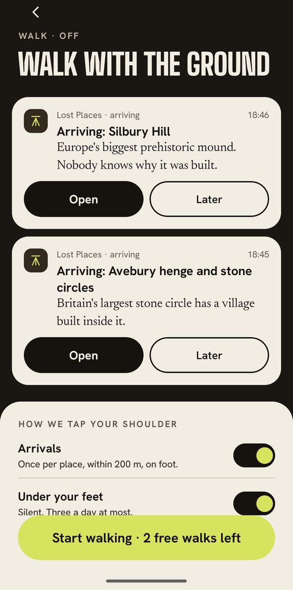
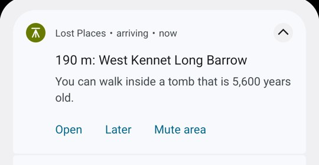
Starting
- On the Column, tap Walk with alerts. Or, on a place page, tap Walk there with alerts.
- Tap Start walking. The first time, the app asks to send notifications. Say Allow.
- Put the phone away. A small "Walking · live" notification stays in your notification bar while you walk.
- When you're done, open the walk and tap Stop walking.
A walk needs notifications. If they're off, the walk won't start. It says so, and it doesn't use up a free walk. Tap Turn on notifications and start again.
A walk needs precise location. If your phone gives Lost Places only its approximate location, it can't tell when you're 200 m from a place. The walk screen says Precise location is off, the walk won't start, and no free walk is used. Tap Turn on precise location.
While you walk, the Column header says Walking · N ahead.
What taps you, and when
You can switch each kind on or off on the walk screen, under How we tap your shoulder.
| Alert | When | Sound |
|---|---|---|
| Arrivals | When you're about 200 m from a place, on foot. Once per place. Places close together come as one alert. | A normal notification |
| Under your feet | When the ground under you gains a new layer as you walk. At most 3 a day. | Silent |
| Protected zones | When you walk into, or are about to walk into, a protected monument area. Only when walking, never while driving. | Quiet |
| Lost near you | When you walk into the area of a lost village. On foot only. At most 3 a day. Never a point. | Quiet, never a buzz |
| Treasure areas | Only if you asked for that treasure, on its page. | Quiet |
Legends never send alerts. They have no point to arrive at.
Kept quiet on purpose
- Quiet hours: no alerts from 22:00 to 07:00. This is on unless you turn it off in Settings.
- Never while driving: alerts wait while you're moving faster than about 29 km/h (18 mph).
- Never too many: at most 3 arrival alerts an hour and 8 a day. The same place won't alert you again for 30 days.
On an alert
- Open shows the place.
- Later puts it away.
- Mute area silences alerts within about 1 km of there, for 30 days.
- Tap the alert itself to go straight to the story.
Free walks
Free includes 3 walks with alerts. With Explorer you get as many as you like. A free walk is only counted when it first taps you on the shoulder: the first arrival, lost-place or under-foot notice you actually get. A walk that never alerts you (at night, with notifications off, or with approximate location) costs nothing. If you stop and start again within 6 hours, it's still the same walk.
Alerts when the app is closed
This version taps you on the shoulder during a walk. Some versions also show Alerts when the app is closed in Settings. It's optional and uses background location. Walks work fine without it.
Battery tips
- A walk uses GPS, so it uses some battery. Stop the walk when you're done.
- Download your country before you go (see Going offline). Then your phone doesn't waste battery hunting for signal.
- Samsung phones may put Lost Places to sleep and cut a walk short. Go to Settings > Keep alerts working on Samsung, or tap Phone killing the walk? Battery settings on the walk screen. Then: 1. Set battery to Unrestricted (App info > Battery > Unrestricted). 2. Add Lost Places to Never sleeping apps (Settings > Battery > Background usage limits > Never sleeping apps).
- Other phones: Phone killing the walk? Battery settings opens Lost Places' own battery page. Choose Unrestricted (or "Don't optimise").
7. Standing there: add the layer
This is the best bit. When you stand at a real place, you can add its layer to Your column.
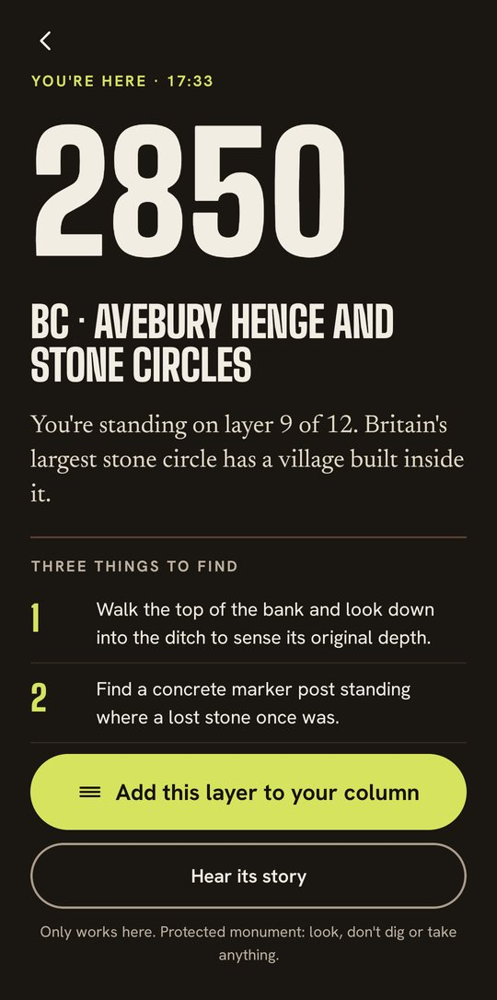
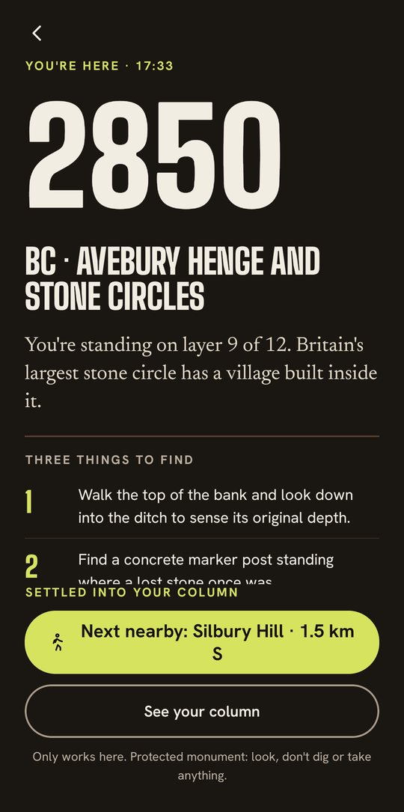
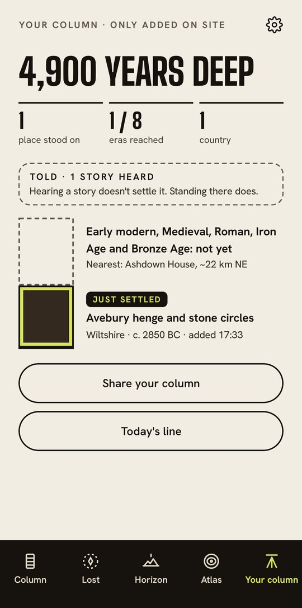
- At the place, open it and tap You're here: add this layer. (It also appears at the end of a story you opened from an alert.)
- You'll see Three things to find at the place. Look for them!
- Tap Add this layer to your column. The layer settles in with a little buzz.
- Next nearby suggests another place to walk to.
Why it only works there: the app needs a real GPS fix, close to the place (about 150 m, or more for big sites). Browsing from home never adds a layer.
Your column
- Years deep is how far back your oldest layer goes.
- Places stood on, eras reached (out of 8) and countries.
- Told counts the stories you've heard. Hearing a story doesn't settle it. Standing there does.
- "Not yet" gaps show eras you haven't reached, with the nearest place to fill them.
- Share your column sends a short text summary.
8. The Lost tab
Things that vanished, nearest first.
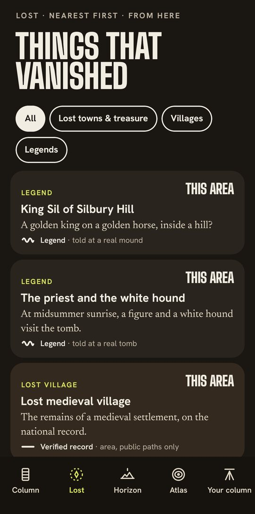
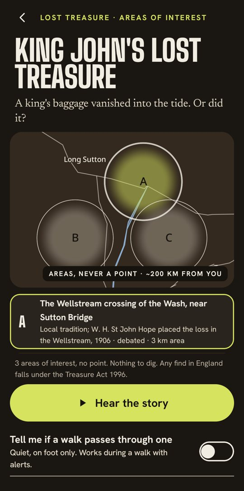
Use the buttons at the top to filter: All, Lost towns & treasure, Villages and Legends. Each card tells you what it is, how far away it is (or This area if you're in it), a one-line hook, how sure we are, and whether you can visit.
- Lost villages: hundreds of medieval villages that emptied, some just fields today. They come from your country's download. Many are on private farmland, so look from public paths.
- Drowned towns: places like Dunwich and Ravenser Odd, swallowed by the sea.
- Legends: stories like the Ninth Legion or Hy-Brasil, the island that never was. Told, never found.
- Lost treasure: for example King John's baggage, lost in the Wash in 1216. Its page shows the main theories of where it was lost. Each one is a soft area of interest, about 3 km wide, with the name of the person who suggested it.
Why there are never points
Lost Places never marks a spot to dig or search. Lost villages, legends and treasure are shown only as soft areas, never as pins. This protects the places (and the farmers who own the land). It's also honest: nobody knows exactly where King John's treasure is.
Treasure areas: an opt-in notice
On a treasure's page you can turn on Tell me if a walk passes through one. During a walk with alerts, you'll then get a quiet line if you walk into one of its areas. It's off unless you turn it on. It needs notifications, and it only works on foot.
9. Today's line
One short question a day, about 20 seconds. Tap Today's line at the top of the Column.
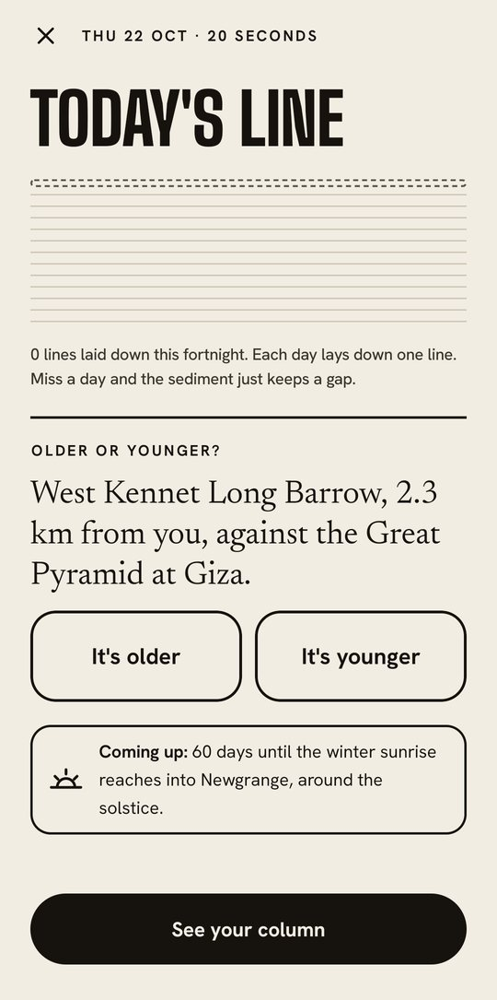
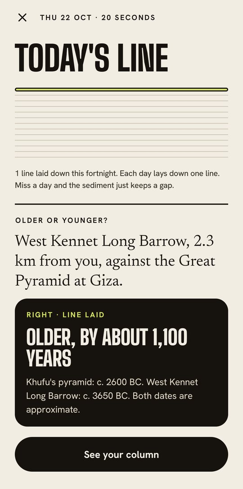
- Older or younger? A place near you against something famous in the world. Is the tomb down the road older than the Great Pyramid? (Sometimes it's Real or legend? instead.)
- Right or wrong, you lay a line. Each day adds one line of sediment. Miss a day and the sediment just keeps a gap. No streaks to lose.
- After you answer, you'll see a hint of tomorrow's question, and you can share today's line as text.
- Reminder: after you answer, you can turn on Remind me at 08:00 for one quiet morning note. It only comes if you haven't answered yet, and never in quiet hours. It needs notifications. You can also turn it on or off in Settings.
10. Going offline
Lost Places works with no signal. Download your country once, ideally at home on Wi-Fi.
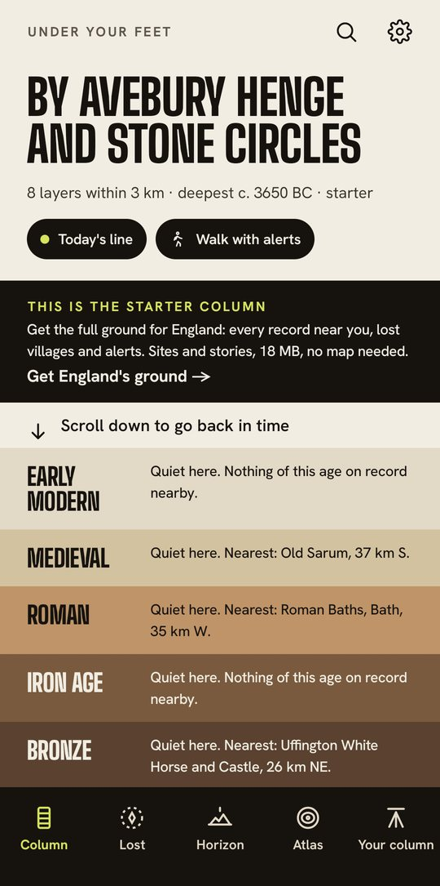
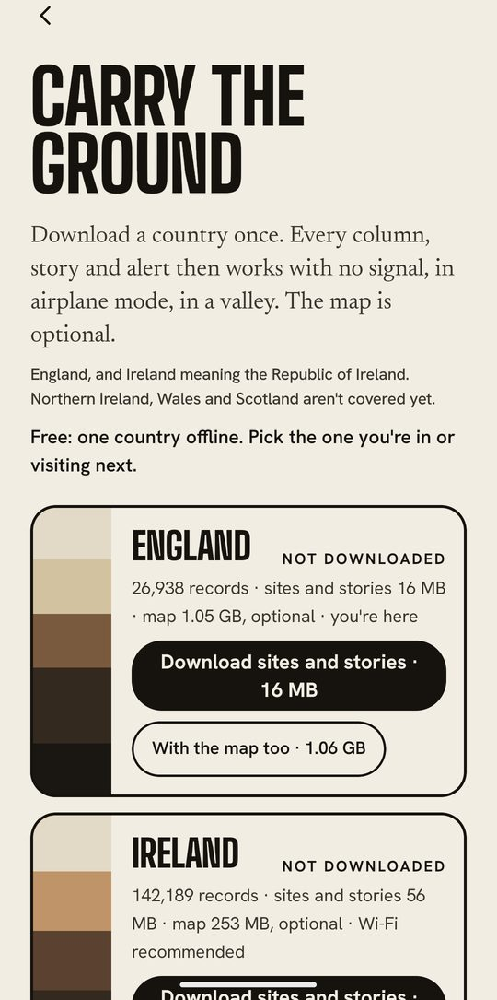
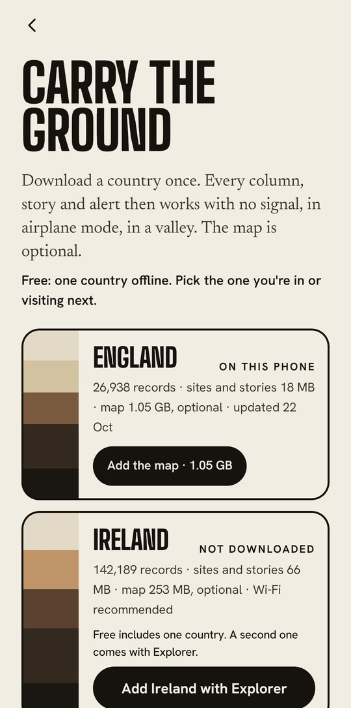
Before you download, you see the starter column: the famous places and stories built into the app. A banner at the top says This is the starter column. Tap it to get your country.
Go to Settings > Offline packs. Each country comes in two parts:
| Country | Sites and stories (what you need) | Map (optional) | Both |
|---|---|---|---|
| England | 16 MB | 1.05 GB | 1.06 GB |
| Ireland (the Republic) | 56 MB | 253 MB | 309 MB |
- Sites and stories is all the Column, Lost tab, alerts and arrivals need: every record near you, the lost villages and the alerts.
- The map adds detailed roads and labels to the Time Atlas and the area maps. Without it, you see a simple outline map.
- Download on Wi-Fi only is on at first. If you're on mobile data, the app asks first, because it may use your allowance, and abroad it can be expensive.
- Downloads carry on from where they stopped if they're cut off.
- You can Update, Add the map later, or Remove a country to free space.
Free includes one country. Pick the one you're in, or visiting next. Both countries come with Explorer.
What works with no signal
Once your country is downloaded, all of this works offline, even in airplane mode: the Column, the sink, place pages, stories and narration, Lost, Today's line, Your column, Horizon, the Time Atlas, search, walks and alerts, and adding layers.
You need a connection only to download packs, to buy or restore Explorer, to open directions in your maps app, and to rate the app.
11. Free and Explorer
Lost Places is free to use, with no ads. Explorer is a one-time unlock: £4.99 in the UK (Google Play shows the price in your own currency).
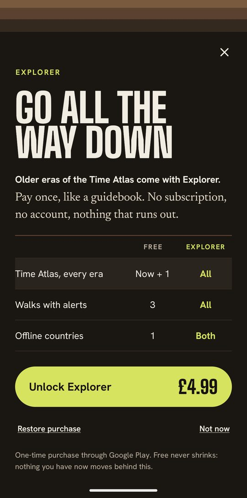
| Free | Explorer | |
|---|---|---|
| The Column, wherever you stand | Yes | Yes |
| Visit famous columns and search offline | Yes | Yes |
| Place pages, stories and legends | Yes | Yes |
| Arrivals and adding layers on site | Yes | Yes |
| Today's line and Your column | Yes | Yes |
| Horizon (compass) | Yes | Yes |
| Offline countries | 1 | Both |
| Walks with alerts | 3 | As many as you like |
| Time Atlas | Today + the deepest era under you | Every era |
| Horizon camera view | 3 tries | As much as you like |
| Lost tab | The 6 nearest legends and lost towns, every lost village in your country, and one featured lost place each week | Everything |
- Pay once, like a guidebook. No subscription, no account, nothing that runs out.
- Free never shrinks. Nothing you have for free now will move behind Explorer.
- Restore purchase: on a new phone, open Settings > Explorer and tap Restore purchase. Use the same Google account you bought it with.
- Purchases go through Google Play. We never see your payment details.
12. Respect the past, and stay safe
These places have lasted thousands of years. Please help them last a few more.
- Look, don't dig. Lost Places has no dig spots, no find spots and no detecting features. Never dig, use a metal detector, or take anything from a site.
- Protected monuments are protected by law. In England, scheduled monuments are protected by law. In Ireland, recorded monuments are protected under the National Monuments Acts. Damaging them, or metal detecting on them, is a crime. The app tells you when you walk into a protected area.
- Don't climb on stones, mounds or walls unless a sign says you may. Silbury Hill, for example, is closed to climbers to stop it eroding.
- Private land: many places, especially lost villages, are on farmland. If the app says "No public access recorded", look from public paths. Stay on rights of way, close gates behind you, and follow the Countryside Code.
- Treasure: in England, finds that count as treasure must by law be reported, under the Treasure Act 1996. In Ireland, all archaeological objects must be reported to the National Museum. Lost Places never shows where to look.
Stay safe
- Tides: some places, like Lindisfarne's causeway or coastal sites, are cut off by the sea. Check the tide times before you cross.
- Cliffs: keep back from cliff edges, for example at Tintagel and on the coast. Ground can give way.
- Livestock: give cows a wide berth, especially with calves. Keep dogs on a lead near animals.
- Weather: moors and hills change fast. Take a coat, water and a charged phone, and tell someone where you're going.
- Don't stare at the screen while walking. Let the alerts tap you on the shoulder. That's what they're for.
- At night: quiet hours keep the app silent from 22:00 to 07:00. Old sites are best visited in daylight.
13. Your privacy
Your location never leaves your phone.
- Your location is checked on your phone against the places you downloaded. It is never sent to us or anyone else.
- No account, no sign-in, no ads, no analytics.
- Your column, saved places and Today's lines stay on your phone.
- The app only goes online to download the packs you choose and to check your Explorer purchase with Google Play.
- Horizon uses the compass, not the camera. The optional camera view only uses the camera while it's open.
- Uninstalling the app deletes everything. If your phone's Android backup is on, your settings may be copied to your own Google backup. Downloaded packs never are.
Read it all in Settings > Privacy, or in the full privacy policy. (When the guide and policy are hosted, this link points to the policy's public address.)
14. Something not working?
I'm not getting any alerts. - Is a walk running? Look for the "Walking · live" notification. Alerts only come during a walk. - Are notifications on for Lost Places? Check your phone's Settings > Apps > Lost Places > Notifications. - Is it between 22:00 and 07:00? Quiet hours are on. - Are you in a car or on a bus? Alerts wait until you're on foot. - Did you already get an alert for that place in the last 30 days, or tap Mute area near there? - Is your country downloaded? The starter column has far fewer places that can alert. - On a Samsung phone, follow the battery tips.
The compass says "Compass rough". Move away from cars, metal fences and magnetic phone cases. Wave the phone slowly in a figure of eight. Or, on Horizon, tap Set north by the sun.
My download is stuck. - Waiting for Wi-Fi: connect to Wi-Fi, or tap Use mobile data. - Paused · no connection: it carries on by itself when you're back online. - No space: the app tells you how much it needs. Free up some space, or download sites and stories without the map. - Can't reach the download server: try again later. Packs already on your phone still work.
My column looks empty, or says "Nothing on record yet". - You may be on the starter column. Download your country (see Going offline). - "Quiet here" is normal. Not every era left something near every spot. - The column covers 3 km around you.
It thinks I'm somewhere else. - If it says Browsing a column, you're visiting somewhere. Tap Use my location. - GPS needs open sky. Step outside or away from tall buildings and wait a few seconds. - If your phone only gives Lost Places your approximate location, it can't tell when you're at a place. In your phone's settings, turn on Use precise location for Lost Places.
It's night. Quiet hours stop alerts from 22:00 to 07:00. You can still read the Column, stories and the Lost tab. The app doesn't switch to a dark theme by itself, so turn your screen brightness down if you need to.
I'm abroad, or in Wales, Scotland or Northern Ireland. Lost Places covers England and the Republic of Ireland. Elsewhere you can still visit famous columns and read stories. Download your pack on Wi-Fi before you travel, as mobile data abroad can be expensive. GPS works without data or roaming.
I bought Explorer but it's not showing. Open Settings > Explorer and tap Restore purchase. Make sure you're signed in to Google Play with the account you used to buy it.
15. Accessibility
- TalkBack: every button and switch has a spoken label. Column layers are read out in full, for example "Layer 4 of 9. About 2400 BC. Silbury Hill, 1.4 km south. Verified." Narration doesn't start by itself while TalkBack is on, so it won't talk over it.
- Text size: the app follows your phone's font size. It has been checked at up to twice the normal size.
- Reduced motion: if you turn on Remove animations in your phone's accessibility settings, the sink skips its long descent and lands straight away.
- Haptics: the little ticks as you scroll through the centuries follow your phone's touch vibration setting.
- Contrast and size: all text meets strong contrast levels on every era colour, and buttons are large enough to tap easily.
- Words always on screen: every story can be read as well as heard.